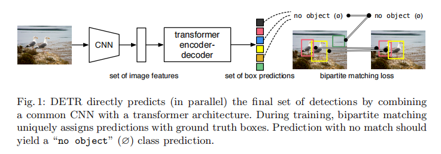
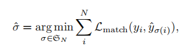
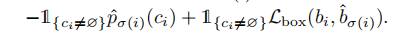
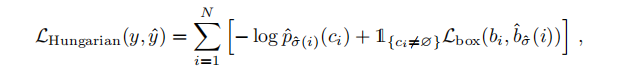

Introduction
- predict all objects at once
- bipartite matching between predicted and ground-truth objects
- 抛弃了许多之前的技巧
，
The DETR model
- a set prediction loss that forces unique matching between predicted and ground truth boxes
- an architecture that predicts a set of objects and models their relation
Object detection set prediction loss
in a single pass, infers a fixed-size of $N$ predictions
$N$ 是一个预设的较大的数
假设 $y$ 是所有的 ground truth objects
Find a permutation $\sigma$ with the lowest cost:

用匈牙利做二分匹配可以快速得到 $\hat \sigma$
$L_{match}$: 每个 ground truth 和 prediction 都可以视为 $(c,b)$ 其中 $c$ 是分类

最终的loss如下

architecture
Backbone
从初始图片 $x \in R^{3 \times H_0 \times W_0}$ 做 CNN 提取特征
Transformer encoder
首先做一个 $1 \times 1$ 的卷积
直接摊平成一维
multi-head self-attention
Transformer decoder
transform $N$ embeddings of size $d$